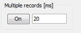
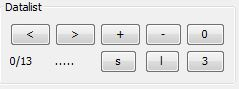
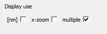

Multiple Records

Depending on the selected output and the paramenter every x ms a record is performed und displayed.
If the system needs more then x ms to do the task it will take its time.
List of Scans

The program supports a list of scans. Multiple records automatically adds scans to the actual list.
And with the [+]-button a scan can be added manually.
- [<] and [>] scroll through the list.
- [+] and [-] insert or delete an item.
- [0] kills the whole list.
- [s] saves the list in the as list of files selected_name_nr_time_output.csv
Nr+1000, time, output, .csv is added by the program.
- [l] loads the saved list

The toggle [multiuple] gives you the option to display more than one scan on the screen.
For example by srolling through the list.